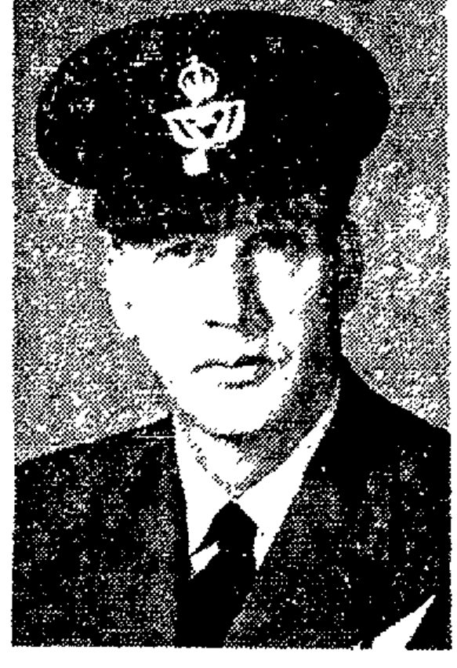
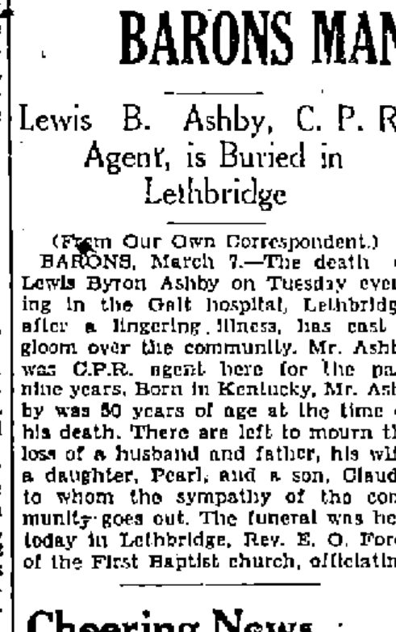
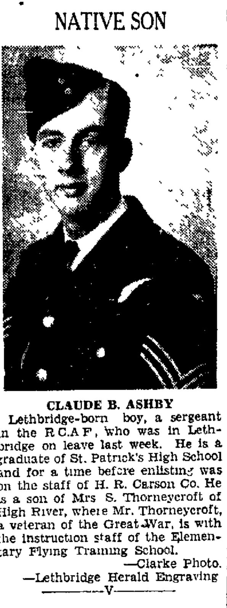
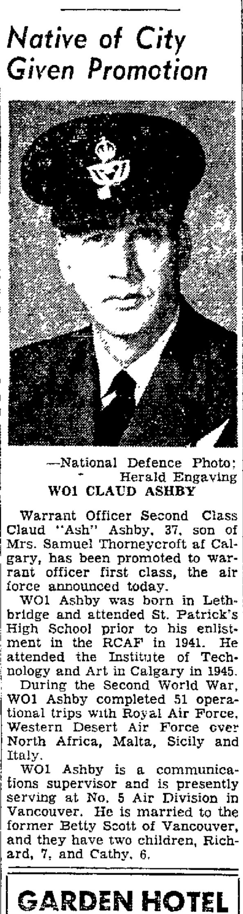

Early life in southern Alberta
Claude Ashby was born on 17 April 1921. His father, Lewis Byron Ashby, was born in Kentucky and was the Canadian Pacific Railway station agent at Barons, a wheat-farming village about 50 km north of Lethbridge. His mother, Linda, was born in Quebec. Claude had a sister, Pearl.
The Lethbridge Herald later called him “Lethbridge-born”, while his death registration gives his birthplace as Barons, where the family lived.
Through the late 1920s and early 1930s his name appears every April in the Lethbridge Herald's children's birthday column: “Claude Ashby, Barons, Alta.”
In March 1930, when Claude was eight, his father died in the Galt Hospital in Lethbridge after a long illness, aged 50. He had been the CPR agent at Barons for nine years. By the 1931 census the family had moved into the city of Lethbridge, where they owned their home.
“Claude Ashby, Lethbridge, said he enjoyed our first story and would like an airplane tale.”
Children's club column, Lethbridge Herald, 5 February 1931. Claude was nine.
He attended St. Patrick's High School in Lethbridge and became a keen tennis player. He played in the Lethbridge Tennis Club's city tournament in 1937, chased the junior men's title at the Milk River tournament in 1939, and reached the semi-finals of the men's open singles there in 1940. Before he enlisted he worked on the staff of the H. R. Carson Co. in Lethbridge.
The Second World War
Claude enlisted in the Royal Canadian Air Force in 1941. By that October he was already a sergeant, home in Lethbridge on leave. The Herald ran his photograph under the headline “Native Son”. His mother had remarried and was living in High River, where his stepfather, Samuel Thorneycroft, a veteran of the First World War, was on the instruction staff of the RCAF's Elementary Flying Training School.
In late November 1941 his mother received word of his safe arrival in England.
From there he went to the Mediterranean. Serving with the Royal Air Force's Western Desert Air Force, he completed 51 operational trips over North Africa, Malta, Sicily and Italy. The Western Desert Air Force supported the British Eighth Army across Egypt and Libya, through the campaign in Tunisia, and on into the invasions of Sicily and Italy in 1943. Thousands of RCAF aircrew served in RAF squadrons like these, far from the Canadian bomber squadrons in England.
By early 1945 he had risen to warrant officer. In March 1945 the Herald listed “WO. C. B. Ashby” of Lethbridge among southern Alberta airmen being repatriated to Canada.
After the war, St. Patrick's High School published its honour roll of the 130 former students who had served in Canada's forces. Claude's name heads the list: “Ashby, Claude”. The list also includes Flight Lieutenant Richard Audet, DFC, the Lethbridge fighter pilot who shot down five enemy aircraft in five minutes.
Still to confirm from his service file
- Service number
- To be added
- Enlistment
- Exact date and place in 1941
- Aircrew trade
- His later work as a communications supervisor suggests a wireless operator, but this isn't confirmed
- Training
- Schools attended in Canada
- Squadron(s)
- Western Desert Air Force squadron(s) and aircraft
- Medals
- To be added
A career in the Air Force

In 1945 Claude attended the Institute of Technology and Art in Calgary, then made the Air Force his career.
In May 1958 the RCAF announced the promotion of Warrant Officer Second Class Claud “Ash” Ashby, 37, to Warrant Officer First Class, the highest non-commissioned rank. He was a communications supervisor serving at No. 5 Air Division in Vancouver. He was married to the former Betty Scott of Vancouver, and they had two children, Richard and Cathy.
Postings, units and the date he retired from the Armed Forces are still to be added.
Later life
Claude retired from the Armed Forces and settled in Chilliwack, British Columbia. He died at Chilliwack General Hospital on 5 March 1998, aged 76. His wife was Betty.
Family memories, photographs and stories to be added.
Timeline
- 17 Apr 1921Born in southern Alberta to Lewis Byron Ashby and Linda Ashby.
- 1926Living with his family in Barons, Alberta, where his father is the CPR agent.
- Mar 1930His father dies in Lethbridge, aged 50.
- 1931Living with his family in Lethbridge and writing to the Herald's children's club asking for an airplane story.
- 1937–1940Plays competitive tennis in Lethbridge and Milk River.
- 1941Enlists in the RCAF after St. Patrick's High School and a job at H. R. Carson Co.
- Oct 1941Home on leave as a sergeant. The Herald runs his photo as “Native Son”.
- Nov 1941Arrives safely in England.
- c. 1942–1944Flies 51 operational trips with the RAF's Western Desert Air Force over North Africa, Malta, Sicily and Italy.
- Mar 1945Repatriated to Canada as a warrant officer.
- 1945Attends the Institute of Technology and Art in Calgary.
- May 1958Promoted to Warrant Officer First Class; communications supervisor at No. 5 Air Division, Vancouver.
- 19__Retires from the Armed Forces.
- 5 Mar 1998Dies in Chilliwack, British Columbia, aged 76.
From the Lethbridge Herald
Three of the newspaper items this history is built on. Click one to see it full size.






Records & sources
His name appears as both Claude and Claud. In 1941 the Herald gave his middle initial as “B.”
Lethbridge Herald (University of Lethbridge digitized collection)
- 8 Mar 1930, p. 3: “Death Calls Barons Man”, the death of Lewis Byron Ashby, CPR agent at Barons. View page ↗
- 5 Feb 1931, p. 11: children's club column. Claude asks for an airplane story. View page ↗
- 17 Apr 1929, 1930, 1931 and 20 Apr 1933: children's birthday lists, “Claude Ashby, Barons”. 1931 page ↗
- 30 Jun 1937, 17 Jun 1939, 25 Jun 1940, 31 Jul 1940: tennis results. 1940 page ↗
- 22 Oct 1941, p. 11: “Native Son”, a photo of Sgt. Claude B. Ashby, RCAF. View page ↗
- 27 Nov 1941, p. 8: safe arrival in England. View page ↗
- 19 Mar 1945, p. 7: “WO. C. B. Ashby” among repatriated Alberta airmen. View page ↗
- 14 Mar 1946, p. 6: St. Patrick's High School honour roll. View page ↗
- 17 May 1958, p. 11: “Native of City Given Promotion”, WO1 Claud Ashby. View page ↗
Census (Library and Archives Canada)
- 1926 Census of the Prairie Provinces: age 5, son, Barons (Village), Alberta. Item 72970312. View record ↗
- 1931 Census of Canada: age 10, son, Lethbridge (City). Father born in the USA, mother born in Quebec. Item 85110969. View record ↗
Vital records
- British Columbia death registration 1998-09-004913: Claud Ashby, died 5 March 1998, Chilliwack, aged 76. Gives his birth date, his birthplace (Barons, Alberta), his parents and his wife. BC Archives genealogy search ↗
Finding his RCAF service file
His full service record would name his squadrons, aircraft, trade, postings and medals. Canadian military service files from 1919 onward aren't online. Requests go through Library and Archives Canada. He died more than 20 years ago, so his file can be requested with proof of death, and his BC death registration serves for that.